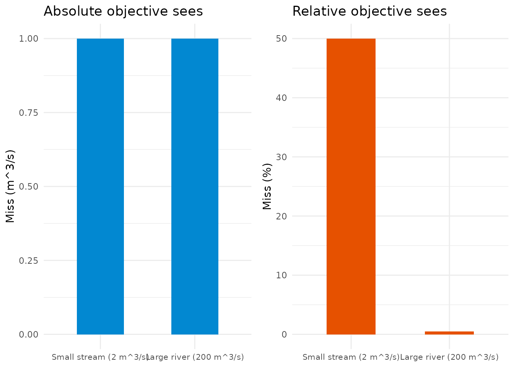
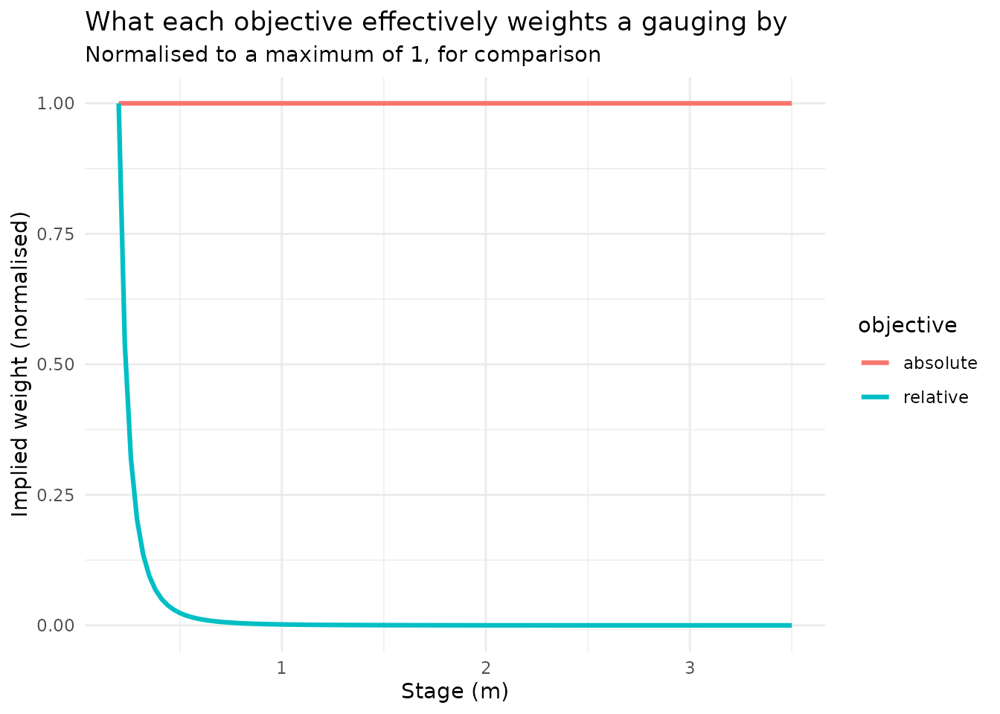
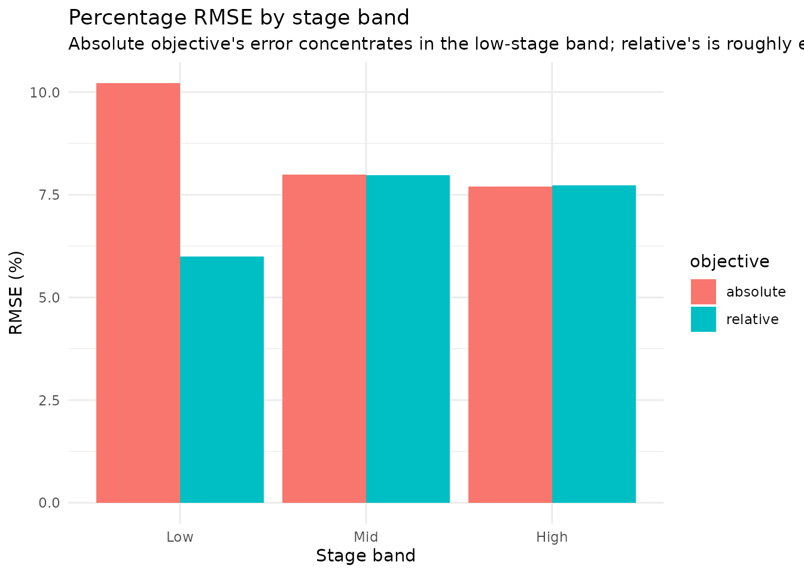

Absolute vs Relative: How the Two Fitting Objectives Actually Work
Jonathan Payne, Environment Agency Flood Forecasting
September 2026
Source:vignettes/objective_guide.Rmd
objective_guide.Rmdvignette("non_standard_optimisation") covers
objective = "relative" mechanically: what it does to a fit,
and a worked comparison showing its
C/a/n land closer to the truth on
proportionally-noisy data. It doesn’t show why – what the
optimiser is actually doing differently underneath. This vignette is
that missing diagram.
Two misses that look very different depending how you measure them
Picture two gaugings, each missed by exactly 1 m³/s: one on a small stream reading 2 m³/s (the model predicted 3), one on a large river reading 200 m³/s (the model predicted 201).
misses_dt <- data.table(
station = factor(c("Small stream (2 m^3/s)", "Large river (200 m^3/s)"),
levels = c("Small stream (2 m^3/s)", "Large river (200 m^3/s)")
),
absolute_miss = c(1, 1),
pct_miss = c(50, 0.5)
)
p_abs <- ggplot(misses_dt, aes(station, absolute_miss)) +
geom_col(fill = "#0288d1", width = 0.5) +
labs(title = "Absolute objective sees", x = NULL, y = "Miss (m^3/s)") +
theme_minimal(base_size = 11) + theme(axis.text.x = element_text(size = 8))
p_pct <- ggplot(misses_dt, aes(station, pct_miss)) +
geom_col(fill = "#e65100", width = 0.5) +
labs(title = "Relative objective sees", x = NULL, y = "Miss (%)") +
theme_minimal(base_size = 11) + theme(axis.text.x = element_text(size = 8))
gridExtra::grid.arrange(p_abs, p_pct, ncol = 2)
The absolute objective (the package’s default,
Q = C(H-a)^n fitted directly) sees these two misses as
identical – both contribute 1^2 = 1 to the sum of
squared errors, so the optimiser has no more reason to fix one than the
other. But the small-stream miss is a 50% error and the large-river miss
is a 0.5% error – wildly different by any practical measure of gauging
accuracy, which is conventionally expressed as a percentage of the
reading, not a fixed number of m³/s (Herschy 2009). The relative
objective (log(discharge_cms) fitted instead) sees
percentages, not absolute misses – so it treats the small-stream error
as the one worth fixing, a hundred times over.
The equivalence, made explicit
That difference in what gets penalised is exactly equivalent to an
implied weight on each gauging, even though
objective = "relative" never mentions the word “weight.”
Minimising squared log-residuals,
is, for small residuals, approximately the same as minimising
weighted squared absolute residuals with weight
1/Q_fit^2 – because
(a
first-order Taylor expansion, the same approximation behind treating a
lognormal error model as “percentage error”), so
objective = "relative" never computes this weight
explicitly – it fits in log-space directly, which amounts to the same
thing without ever constructing the vector – but plotting it makes the
mechanism visible:
set.seed(11)
stage_m <- seq(0.2, 3.5, by = 0.03)
true_C <- 4; true_a <- 0.05; true_n <- 1.7
discharge_true_cms <- true_C * (stage_m - true_a)^true_n
discharge_cms <- discharge_true_cms * exp(rnorm(length(stage_m), sd = 0.08))
fit_relative <- rate_optimise(discharge_cms, stage_m, objective = "relative")
fitted_cms <- fit_relative@limbs$C * (stage_m - fit_relative@limbs$a)^fit_relative@limbs$n
weight_dt <- data.table(
stage_m = rep(stage_m, 2),
weight = c(rep(1, length(stage_m)), 1 / fitted_cms^2),
objective = rep(c("absolute", "relative"), each = length(stage_m))
)
weight_dt[, weight_norm := weight / max(weight), by = objective]
ggplot(weight_dt, aes(stage_m, weight_norm, colour = objective)) +
geom_line(linewidth = 1.1) +
labs(
title = "What each objective effectively weights a gauging by",
subtitle = "Normalised to a maximum of 1, for comparison",
x = "Stage (m)", y = "Implied weight (normalised)", colour = "objective"
) +
theme_minimal(base_size = 11)
Absolute weights every gauging the same, at every flow. Relative
weights low-flow gaugings far more heavily than high-flow ones – which
is exactly the behaviour non_standard_optimisation.Rmd
observed indirectly (the low-flow shape holding up better under
objective = "relative"); this is the mechanism producing
it.
Seeing it in the residuals
The same story shows up in how each fit’s errors are distributed, if you look at percentage residuals rather than absolute ones – the scale gauging accuracy is actually judged on. A raw scatter of percentage residuals against stage is too noisy at any realistic sample size to show this by eye; summarising as percentage RMSE within stage bands makes it clear instead:
fit_absolute <- rate_optimise(discharge_cms, stage_m)
fitted_abs <- fit_absolute@limbs$C * (stage_m - fit_absolute@limbs$a)^fit_absolute@limbs$n
resid_dt <- rbind(
data.table(stage_m = stage_m, objective = "absolute", fitted_cms = fitted_abs),
data.table(stage_m = stage_m, objective = "relative", fitted_cms = fitted_cms)
)
resid_dt[, discharge_cms := rep(discharge_cms, 2)]
resid_dt[, pct_residual := 100 * (discharge_cms - fitted_cms) / fitted_cms]
resid_dt[, stage_band := cut(stage_m, 3, labels = c("Low", "Mid", "High"))]
rmse_pct_dt <- resid_dt[, .(rmse_pct = sqrt(mean(pct_residual^2))), by = .(objective, stage_band)]
ggplot(rmse_pct_dt, aes(stage_band, rmse_pct, fill = objective)) +
geom_col(position = "dodge") +
labs(
title = "Percentage RMSE by stage band",
subtitle = "Absolute objective's error concentrates in the low-stage band; relative's is roughly even",
x = "Stage band", y = "RMSE (%)", fill = "objective"
) +
theme_minimal(base_size = 11)
The absolute fit’s percentage error is markedly worse in the low-stage band than anywhere else – exactly where percentage errors matter most and absolute errors matter least, so the optimiser had the least reason to get it right there. The relative fit’s percentage error sits roughly even across all three bands: no stage band is systematically favoured over another, because the objective it actually minimised was already expressed on that same percentage scale.
When to reach for it
Unchanged from non_standard_optimisation.Rmd’s own
guidance: if gaugings span a wide flow range and accuracy is roughly
proportional across it – true of most current-meter and ADCP gauging –
objective = "relative" is a reasonable default, not just a
fix for a diagnosed problem. What this vignette adds is the mechanism:
it isn’t a different kind of curve, just a different, and for most
gauging programmes more realistic, definition of what counts as a big
error.
Where to go next
-
vignette("non_standard_optimisation")– the mechanical API (objective = "relative") and a workedC/a/nrecovery comparison on proportionally-noisy synthetic data. -
vignette("rating_curves_guide")– “Fitting:rate_optimise()” for whereobjectivesits among the function’s other arguments. -
?rate_optimise– full argument reference.